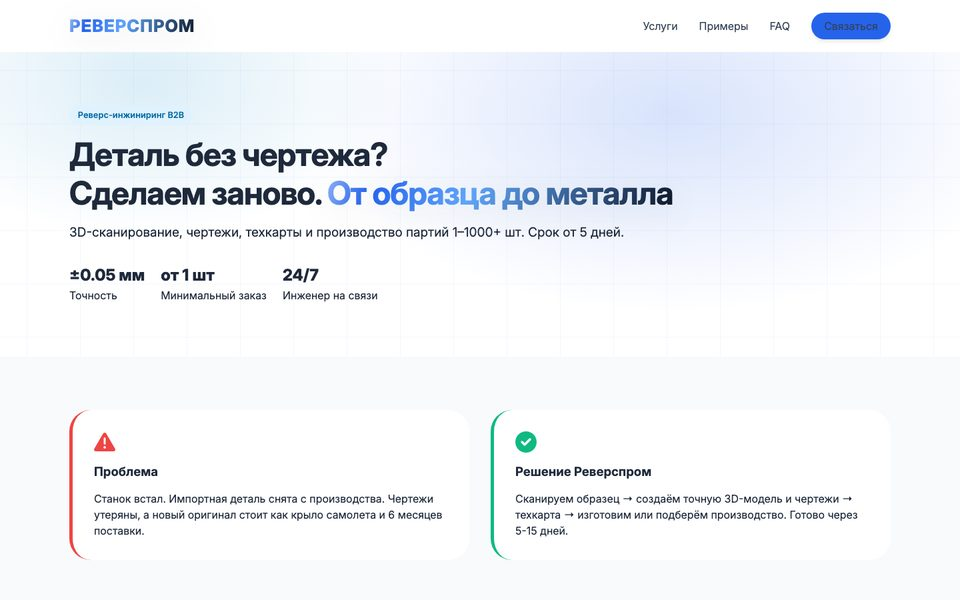
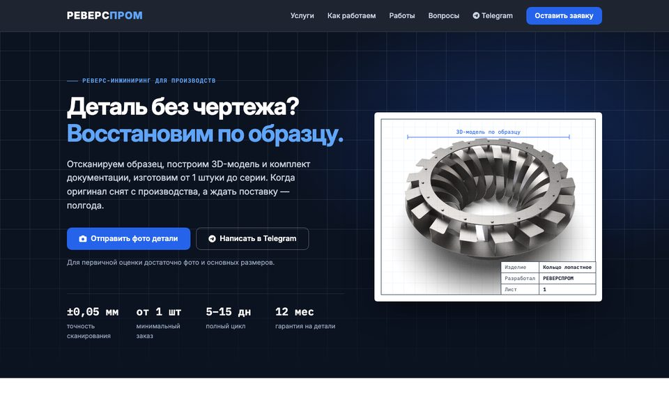
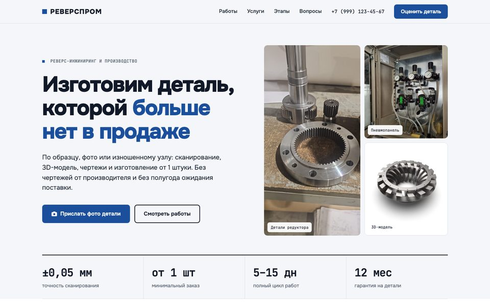
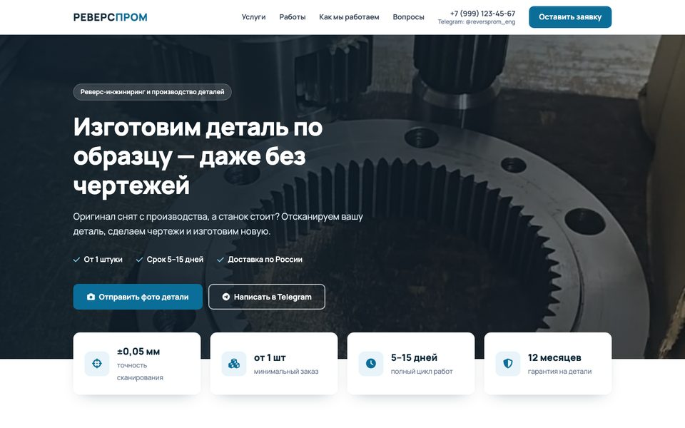
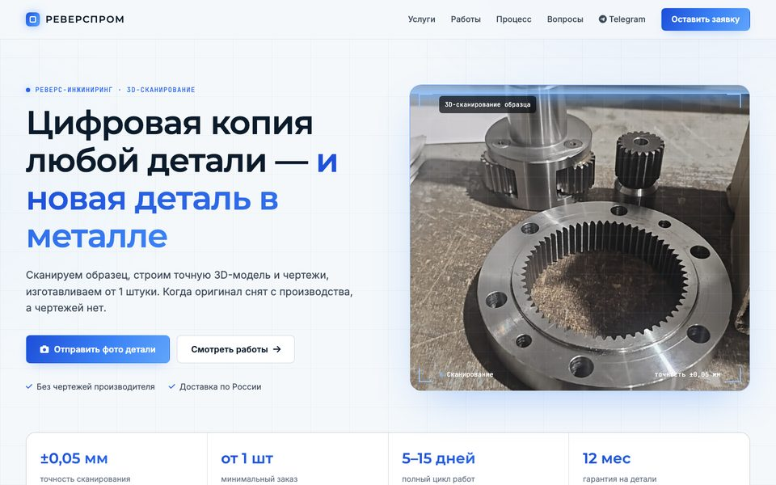
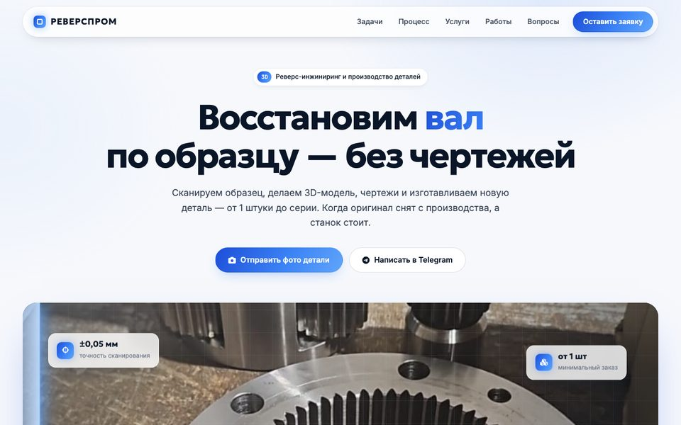

Текущий сайт
Исходная версия
Сайт в том виде, в каком он был до переработки. Для сравнения.
Открыть →
Версия 1
Тёмный первый экран
Тёмно-синий первый экран с «чертёжной» сеткой, остальная страница светлая. Спокойные карточки, синий акцент.
Открыть →
Версия 2
Светлый каталог
Мозаика из фото работ на первом экране, таблица сравнения услуг, каталог работ с фильтром. Стальной синий цвет.
Открыть →
Версия 3
Классический сайт услуг
Первый экран на фоне фотографии, карточки услуг с фото, синий призыв посередине страницы. Самый привычный вариант.
Открыть →
Версия 4
Хай-тек со сканированием
Окно 3D-сканирования с бегущим лучом, светящиеся синие кнопки и градиентные рамки. Широкая сетка.
Открыть →
Версия 5
Интерактивная
Сменяющееся слово в заголовке, панорама со сканированием, этапы работы с закреплённым экраном и лента работ.
Открыть →